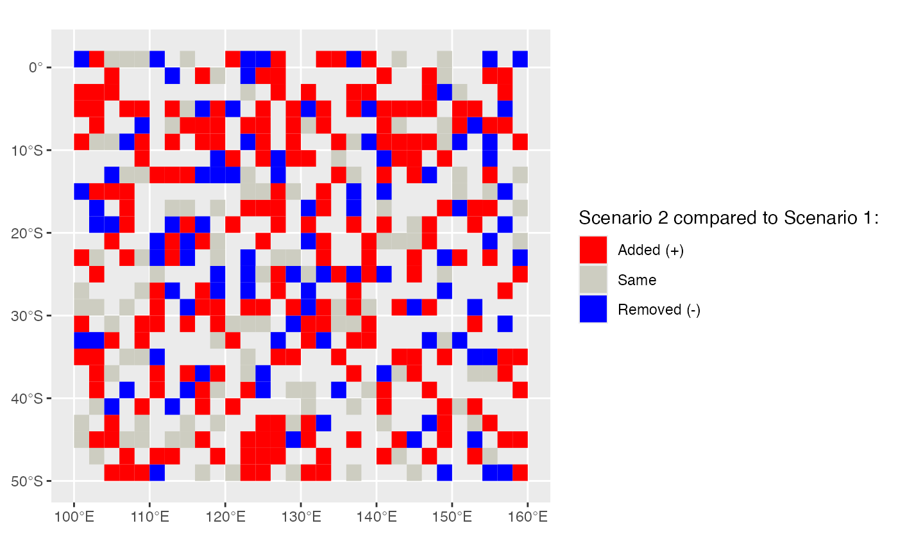

Conservation planning often requires the comparison of the outputs of the solutions of different conservation problems. One way to compare solutions is by spatially visualising the different planning units that were selected in two separate solutions to conservation problems.
splnr_plot_comparison() allows to map the differences of two solutions in customisable way using ggplot2. This function requires two separate sf objects each containing a solution_1 column indicating the binary solution (selected vs not selected) of a prioritizr conservation problem. It outputs a ggobject and can be combined with the spatialplanr function splnr_gg_add().
Examples
# 30 % target for problem/solution 1
dat_problem <- prioritizr::problem(dat_species_bin %>% dplyr::mutate(Cost = runif(n = dim(.)[[1]])),
features = c("Spp1", "Spp2", "Spp3", "Spp4", "Spp5"),
cost_column = "Cost"
) %>%
prioritizr::add_min_set_objective() %>%
prioritizr::add_relative_targets(0.3) %>%
prioritizr::add_binary_decisions() %>%
prioritizr::add_default_solver(verbose = FALSE)
dat_soln <- dat_problem %>%
prioritizr::solve.ConservationProblem()
# 50 % target for problem/solution 2
dat_problem2 <- prioritizr::problem(
dat_species_bin %>%
dplyr::mutate(Cost = runif(n = dim(.)[[1]])),
features = c("Spp1", "Spp2", "Spp3", "Spp4", "Spp5"),
cost_column = "Cost"
) %>%
prioritizr::add_min_set_objective() %>%
prioritizr::add_relative_targets(0.5) %>%
prioritizr::add_binary_decisions() %>%
prioritizr::add_default_solver(verbose = FALSE)
dat_soln2 <- dat_problem2 %>%
prioritizr::solve.ConservationProblem()
(splnr_plot_comparison(dat_soln, dat_soln2))
